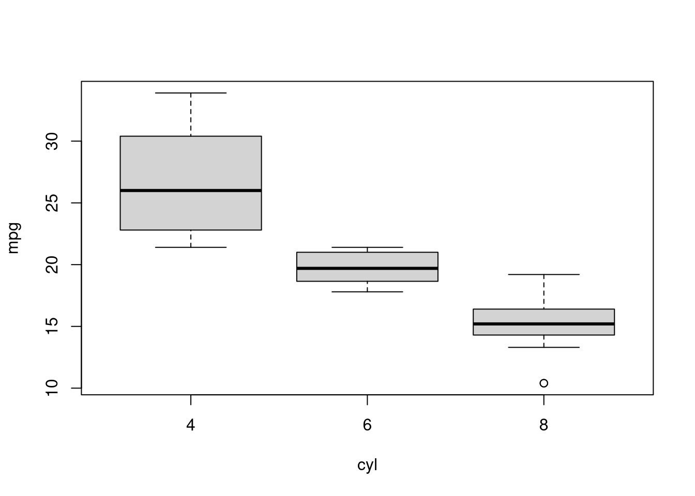

Atestando diferenças em médias: o teste t para amostras independentes
statistics
Autor
Alberson Miranda
Data de Publicação
2 de novembro de 2020
Suponha que você tenha duas amostras (i.e. as rendas da população negra e branca de sua cidade) e você queira comprovar que suas médias sejam significantemente diferentes, ou seja, que sejam diferentes mesmo considerando a variância e o tamanho das amostras. Isso é possível com um teste t de Student, um dos mais populares testes na estatística.
Vamos utilizar um dos datasets nativos do R para aplicar esse conceito, o mtcars. Primeiramente, vamos dar uma olhada em nossos dados.
data = mtcarsknitr::kable(head(data), booktabs =TRUE, digits =2) |> kableExtra::kable_styling(latex_options =c("striped"))
Tabela 1: Base de dados.
mpg
cyl
disp
hp
drat
wt
qsec
vs
am
gear
carb
Mazda RX4
21.0
6
160
110
3.90
2.62
16.46
0
1
4
4
Mazda RX4 Wag
21.0
6
160
110
3.90
2.88
17.02
0
1
4
4
Datsun 710
22.8
4
108
93
3.85
2.32
18.61
1
1
4
1
Hornet 4 Drive
21.4
6
258
110
3.08
3.21
19.44
1
0
3
1
Hornet Sportabout
18.7
8
360
175
3.15
3.44
17.02
0
0
3
2
Valiant
18.1
6
225
105
2.76
3.46
20.22
1
0
3
1
Uma boa forma de ilustrar o teste é verificar se as médias de consumo dos carros (mpg, miles per gallon) com 4, 6 e 8 cilindros (cyl) diferem significantemente entre si.
# Médias amostraisaggregate(mpg ~ cyl, data = data, FUN = mean)
cyl mpg
1 4 26.66364
2 6 19.74286
3 8 15.10000
Verificamos que as médias amostrais são diferentes. Resta saber se são significantemente diferentes. Plotar um boxplot pode nos ajudar a ter uma intuição. Podemos ver que, exceto pelo grupo de 4 cilindros que possui uma variância maior, os grupos são bem concentrados, de forma que podemos suspeitar que as diferenças sejam significantes.
# Boxplotboxplot(mpg ~ cyl, data = data)

Figura 1: Boxplot de consumo por quantidade de cilindros.
O teste t possui diversas variações — uma amostra, duas amostras pareadas, duas amostras independentes —, e correções para tratar diferenças na variância. Para este caso, temos três amostras independentes e, por hora, vamos supor que as variâncias do grupo 4 difere das demais e que a dos grupos 6 e 8 são iguais — deixaremos a análise de variâncias para outra postagem. Isso nos deixa com o teste t para duas amostras independentes.
A hipótese nula do teste é que as médias são significativamente iguais. Já a hipótese alternativa pode ser formulada como a não nulidade da diferença entre as médias ou \(\bar{X_1}\) maior ou menor que \(\bar{X_2}\). Aqui vamos usar a primeira opção:
\[
h_0: \bar{X_1} - \bar{X_2} = 0 \\
h_1: \bar{X_1} - \bar{X_2} \neq 0
\] A estatística t para esse teste é calculada da maneira abaixo. Note que se tomarmos o limite de \(t(n)\), com \(n \rightarrow \infty\), \(t\rightarrow \infty\), causando a rejeição de \(h_0\). Dessa forma, em último caso, o teste t é um teste de tamanho de amostra, ou seja, se sua amostra for suficientemente grande e as médias divergirem, elas tenderão a ser também significantemente diferentes.
\[ t = \frac{\bar{X_1} - \bar{X_2}}{s_p . \sqrt{\frac{1}{n_1}+\frac{1}{n_2}}} \]
Como primeiro caso, vamos comparar as médias de consumo dos veículos com 6 e 8 cilindros. Como estamos considerando que suas variâncias são iguais, temos de usar o argumento var.equal = TRUE:
# teste t para 6 e 8 cilindrost.test(mpg ~ cyl, data = data[which(data$cyl !=4),], var.equal =TRUE)
Two Sample t-test
data: mpg by cyl
t = 4.419, df = 19, p-value = 0.0002947
alternative hypothesis: true difference in means between group 6 and group 8 is not equal to 0
95 percent confidence interval:
2.443809 6.841905
sample estimates:
mean in group 6 mean in group 8
19.74286 15.10000
Com p-valor de zero, podemos rejeitar a hipótese nula e considerar que as médias de consumo entre os veículos de 6 e 8 cilindros diferem.
Para as demais comparações, vamos usar o default para var.equal que é FALSE. Isso significa aplicar a correção de Welch para amostras independentes e de variância diferentes. Como esperado, também podemos rejeitar a hipótese nula e confirmar a diferença nas médias de consumo entre os veículos de 4 e 6 cilindros e 4 e 8 cilindros.
# teste t para 4 e 8 cilindrost.test(mpg ~ cyl, data = data[which(data$cyl !=6),])
Welch Two Sample t-test
data: mpg by cyl
t = 7.5967, df = 14.967, p-value = 1.641e-06
alternative hypothesis: true difference in means between group 4 and group 8 is not equal to 0
95 percent confidence interval:
8.318518 14.808755
sample estimates:
mean in group 4 mean in group 8
26.66364 15.10000
# teste t para 4 e 6 cilindrost.test(mpg ~ cyl, data = data[which(data$cyl !=8),])
Welch Two Sample t-test
data: mpg by cyl
t = 4.7191, df = 12.956, p-value = 0.0004048
alternative hypothesis: true difference in means between group 4 and group 6 is not equal to 0
95 percent confidence interval:
3.751376 10.090182
sample estimates:
mean in group 4 mean in group 6
26.66364 19.74286